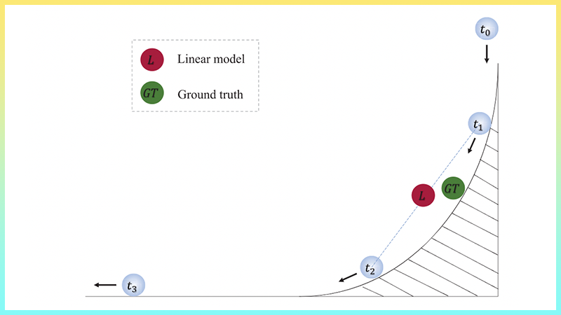

|
Hi! Here is ZHANG Yuechen, Julian. I am a second-year Ph.D. student at CUHK, advised by Prof. Jiaya Jia. I also join SmartMore as a computer vision developer. Before that, I received my B.Sc. degree at CUHK. My research interests are 3D scene modeling and stylization. I also worked on projects on image segmentation. |

|
|
|
|
|
Yuechen Zhang, Zexin He, Jinbo Xing, Xufeng Yao, Jiaya Jia Preprint, 2022 We present a controllable scene stylization method utilizing radiance fields to stylize a 3D scene, with a single stylized 2D view taken as reference. |
|
|
Yuechen Zhang, Tiancheng Shen*, Huaijia Lin, Lu Qi, Eric Lo, Jiaya Jia Preprint, 2022 R2Former decomposes the relationships into intra-region ones and inter-region ones. With such modifications, the performance of mask classification can be improved on widely used semantic segmentation benchmarks. |
|
|
Tiancheng Shen, Yuechen Zhang, Lu Qi, Jason Kuen, Xingyu Xie, Jianlong Wu, Zhe Lin, Jiaya Jia CVPR, 2022 Paper / Code 
We propose the Continuous Refinement Model (CRM) for the ultra high-resolution mask refinement. CRM aligns the feature with the refinement target and aggregates them to reconstruct image details. |


|
Xufeng Yao, Yang Bai, Xinyun Zhang, Yuechen Zhang, Qi Sun, Ran Chen, Ruiyu Li, Bei Yu CVPR, 2022 Paper / Code 
We propose a novel proxy-based contrastive learning method, which replaces the original sample-to-sample relations with proxy-to-sample relations, significantly alleviating the positive alignment issue. |
|
|
|

Flow-aware synthesis: A generic motion model for video frameinterpolation Paper Computational Visual Media, 2021. Jinbo Xing, Wenbo Hu, Yuechen Zhang, Tien-Tsin Wong |

ESTR4999: Few-Shot Glyph Style Transfer Code CUHK FYP. Supervised by Tien-Tsin Wong. |

ESTR4998: Protrait Style Transfer Code CUHK FYP. Collaborated with Jinbo Xing, supervised by Tien-Tsin Wong. |
|
|
| SmartMore Corporation Limited |
Computer Vision Developer
Mentor: Shu Liu |
Jan. 2020 - Present |
| The Chinese University of Hong Kong |
Bachelor of Computer Science
Supervisor: Tien-Tsin Wong |
Sep. 2016 - Jul. 2021 |
| Nanyang Technological University | GEM Trailblazer Exchange Program | Jan. 2019 - May. 2019 |
|
|
CUHK ELITE Stream Scholarship, 2017, 2018
CUHK CSE Academic Outstanding Award, 2018, 2019, 2020
CUHK Faculty of Engineering, Dean’s List, 2017, 2018
CWChu College Scholarships for Academic Excellence, 2018, 2019, 2020
|
|
| CSCIXXXX | TBA | 2023 Spring |
|
Last updated: Nov 2022
|